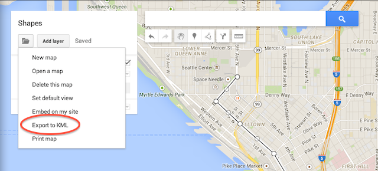

This page provides a simple tool to generate a GTFS shapes.txt file from polyline entries in a KML file.
Inputs
KML File
At bare minimum, we need your KML file:
Reverse Shapes
We can automatically generate reverse shapes that specify points in the opposite order of your input polylines. Recall that when you have two trips on the same route but running in opposite directions (eg. inbound vs outbound), you must specify different shapes for the two journey patterns, with shape points following the path of travel. For simple routes, you can just draw on polyline and we can automatically generate the reverse shape if requested.
Generate reverse shapesStart the Conversion
When you are ready, press the Convert button to generate
your shapes.txt file. Make sure you've selected a KML file
first!
Output
The content of shapes.txt will be written here:
Generating KML
A number of tools can be used to generate KML, such as:
Example: Google My Maps
You can use Google My Maps to draw simple polyline features for your transit routes. The name of each polyline feature will be used as its shape id in the conversion.
When you are ready to export, select the "KML Export" option from the Import/Export drop-down menu:
